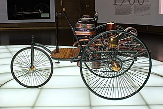

Cars Lovers!
Tau kah kamu??

Kendaraan pertama yang bekerja dengan uap mungkin pertama kali didesain oleh Ferdinand Verbiest, sekitar
tahun 1672. Ia mendesain mainan kendaraaan berukuran 65cm untuk kerajaan, yang tidak bisa membawa penumpang.
Tidak diketahui apakah model kendaraan yang dibuat Verbiest pernah diproduksi atau tidak. Tahun 1752,
Leonty Shamshurenkov, membuat konstruksi sebuah kendaraan bertenaga manusia. Ia juga melengkapi kendaraan
buatannya dengan odometer. Kendaraan yang ia buat mirip dengan sebuah kereta salju. Kendaraan tenaga
uap pertama dibuat pada akhir abad 18. Nicolas-Joseph Cugnot dengan sukses mendemonstrasikan kendaraan
roda tiga itu pada tahun 1769. Kendaraan pertama menggunakan tenaga mesin uap, mungkin peningkatan mesin
uap yang paling dikenal, dikembangkan di Birmingham, Inggris oleh Lunar Society. Dan juga di Birmingham
mobil tenaga bensin pertama kali dibuat di Britania pada tahun 1896 oleh Frederick William Lanchester
yang juga mematenkan rem cakram. Pada tahun 1890-an, etanol digunakan sebagai sumber tenaga di Amerika
Serikat.
Namun dunia industri mobil mulai melirik ke dunia mobil listrik. Listrik dinilai lebih efisien dan lebih
murah sebab tidak lagi menggunakan bahan bakar minyak yang mulai menepis persediannya sehingga membuat
harganya melambung tinggi.
AUTOwheels akan memberikan beberapa list rekomendasi mobil listrik dari beberapa produsen mobil.